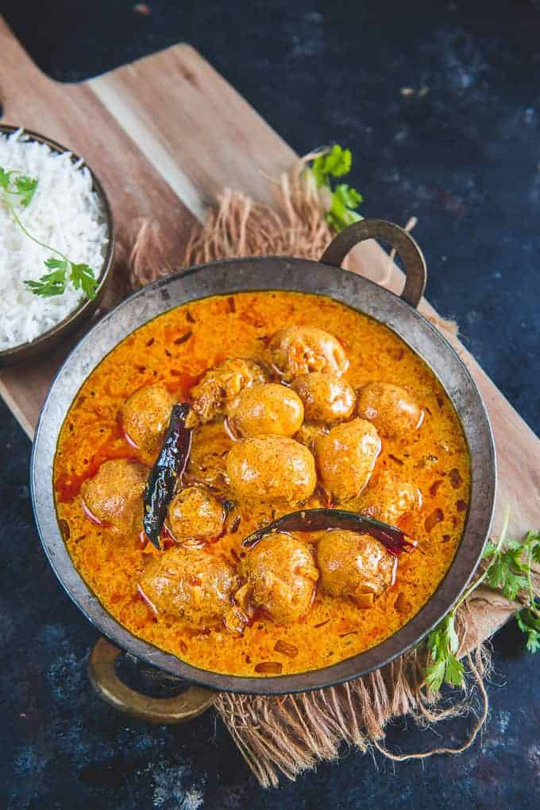

Dum Aloo
Ingredients
- 250 gms. potatoes soaked in water
- 3 tomatoes boiled and pureed
- 2 small onions roughly chopped
- 3 green chillies chopped
- 1 & 1/2 tbsp. cashew nuts soaked in water
- 1 & 1/2 tbsp. butter
- 2 tbsp. curd (yogurt)
- 1 tsp. sugar
- 1 tsp. red chilli powder
- salt to taste
- 1 tsp. garam masala
- 3-4 garlic cloves
- 1 big piece ginger
- 2 cardamoms
- 3 pieces of cloves
- 3 pieces of cinnamon
- coriander leaves
Dum aloo specifically belongs to the Kashmiri cuisine.
However, every culture has its own version of this dish.
It is one of the most popular potato curry dishes in India.
Method:
- Onion paste - Add chopped onions, garlic, green chillies & ginger into a mixer and grind them into a smooth paste.
- Cashew Nuts Paste - Grind 1 & 1/2 tbsp. soaked cashew nuts well into a smooth paste.
- Heat 1 & 1/2 tbsp. butter in a round bottom pan. Add in cinnamon, clove and cardamom.
- After 30-40 sec, add onion paste. Saute this well for 8-10 minutes.
- Once the onion paste dries up and darkens in colour, add cashew paste. Cook it for a minute.
- Add tomato puree. Stir well.
- Add garam masala, red chilli powder, salt, sugar and curd (yogurt).
- Mix well. Make sure there are no lumps of curd (yogurt)
- Cook this gravy for 4-5 minutes.
- Add potatoes. Add water if required.
- Mix well and cover the mixture. Let it cook for 2-3 minutes.
- Add a cup of water, cover the pan and let the gravy simmer for 10-12 minutes.
- Garnish with coriander leaves, lemon wedge and onion rings.
- Serve hot with roti, chapati or bread.